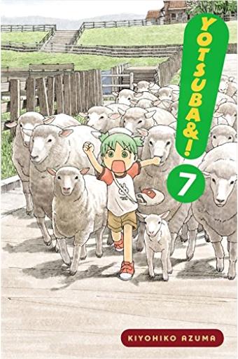
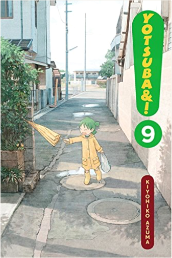
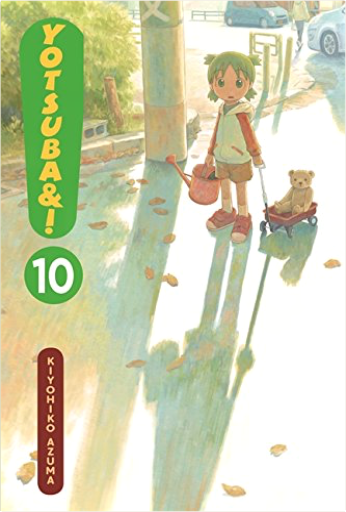
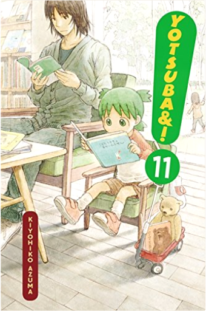
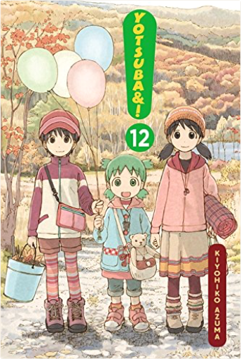
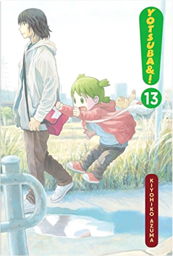
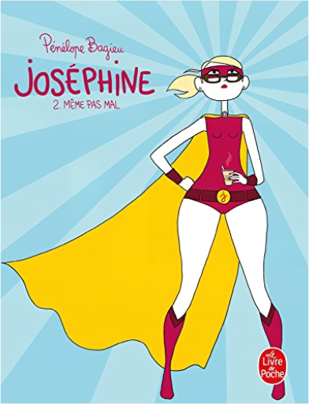
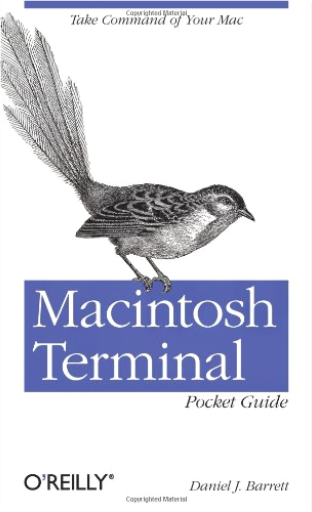

 Yotsuba&!, Vol. 7Kiyohiko Azuma  Mooooo...! MOOOO...! Cows are neato! It's fun pretending to be a cow! And milk comes from cows, so I bet they're real nice too. 'Cos milk is super-yummy, right?! Yotsuba thinks so! And milk comes in lotsa flavors, so cows must come in different flavors too. How else is there white milk and coffee milk and chocolate milk?! Then there's the black and white cows, they've gotta make a super-secret special flavor, huh?! Yotsuba wants to know! Let's go ask the cows at the ranch, Daddy! Come on! Yotsuba&!, Vol. 8Kiyohiko Azuma The ranch wasn't fun, huh? But maybe festivals will be less funner?! (Yotsuba's playing opposites, ha-ha!) Yotsuba got uninvited to Fuuka's school for a culr...a clart...a cultural festival! And she didn't promise Yotsuba there wouldn't be CAKE! Yotsuba doesn't want a cake as biiiiiig as Jumbo, nope!! You wouldn't either, now would you?! Ohhh! And then, and then! There ISN'T gonna be a great big festival for the whole town to go to! And Yotsuba isn't gonna work hard and help out there with Ena and Fuuka, nuh-uh! Not even for candy, nooooo way!  Yotsuba&!, Vol. 9Kiyohiko Azuma Beep-beep-beep! Yotsuba here, and riiiight on schedule! Every day is a fun day, and today's gonna be even funner than the rest. We're busy, busy, busy! We should write down a schedule so we don't forget what we gotta do...like go to the bathroom! And go to the berry gair...um, teddy bear store with Daddy! And try to fly! Omigosh, Yotsuba missed toilet time already! Noooo! What to do?! What to do?!  Yotsuba&!, Vol. 10Kiyohiko Azuma Yotsuba loooooves playing games! When Daddy's the counter at hide-and-seek, he can never find Yotsuba, 'cause I'm such a good hider! And when we go to the park, Yotsuba's the bestest at swing-tag-shoe-races. Daddy says Yotsuba's just making up the rules as we go along, but Yotsuba thinks Daddy's just a sour loser. But maybe Yotsuba will let him win once in a while...  Yotsuba&!, Vol. 11Kiyohiko Azuma Say cheese! Say cheeeese! Yotsuba's got a shiny new camera! But this new camera is too cool for just Daddy's silly poses. What else should Yotsuba take? Maybe the nice man at the restaurant who makes udon, or Shaggy Beard at the bike shop. But definitely not that dog down the street. He's a little scary and . . . Oh no! Watch out, Juralumin!!!! WAHHHH!  Yotsuba&!, Vol. 12Kiyohiko Azuma Oops! Your shoe! Your shoe! Your shoe came untied! But don't worry! Tora taught Yotsuba how to tie a bow like a butterfly! Now Yotsuba can tie Juralumin's ribbon aaaall by herself. Huh? Why are Yotsuba's hands blue? Well, see, there was this reeeally pretty blue paint...and Yotsuba thought Daddy would want his stuff to be reeeally pretty blue too... Are Yotsuba's hands gonna stay blue forever and ever?!!  Yotsuba&!, Vol. 13Kiyohiko Azuma Fresh off the excitement of her camping trip, Yotsuba initiates a very productive session of sandbox play in which she instructs Fuuka how to properly run a bakery. But even more exciting is a visit from Grandma! Yotsuba learns how to value and enjoy cleaning, how not to be rude when hoping for souvenirs, and most important, how to cope when Grandma leaves. But don't worry, she'll be back someday! | JoséphinePenelope Bagieu Joséphine a « la trentaine », n'est pas mariée, n'a pas d'enfant, mais elle a un chat. Elle est blonde et menue (du haut en tout cas), et un jour elle se mettra au sport. Elle travaille dans un bureau avec plein de gens qui ne connaissent pas son nom, mais remarquent ses achats compulsifs. Elle se fait harceler par sa gardienne, ses parents ne sont vraiment pas des cadeaux, sa soeur parfaite lui donne des leçons de vie, mais heureusement il y a Rose et Cyril, ses meilleurs amis, toujours solidaires et attentifs à ses malheurs. Finalement, il ne lui manque pas grandchose, à part peut-ètre l'homme idéal, pour pouvoir faire des courses pour deux, imaginer des soirées torrides et partir en week-end romantique. En attendant, elle pleure devant des fi lms à l'eau de rose et suit une psychanalyse avec son esthéticienne !  Joséphine 2: Mème Pas MalPenelope Bagieu Les tribulations de Joséphine, trentenaire célibataire, moins gourde et mieux habillée qu'avant, mais toujours prète à plonger dans un plan galère... Cette fois-ci, bien décidée à ne pas rester seule avec son chat Bradpitt, elle passe aux choses sérieuses: mais quand elle drague un serveur il s'avère gay, quand elle intéresse un mec elle le saoule avec son ex, et quand elle capture enfin un homme, il se révèle... marié. Finalement, le yoga, il n'y a que ça de vrai dans la vie. A Christmas Bride/Christmas BeauMary Balogh In a pair of classic Regency-era Christmas romance novels from New York Times bestselling author Mary Balogh, the holidays herald the greatest gift of all: unexpected, all-consuming love.  Macintosh Terminal Pocket Guide: Take Command of Your MacDaniel J. Barrett Unlock the secrets of the Terminal and discover how this powerful tool solves problems the Finder can’t handle. With this handy guide, you’ll learn commands for a variety of tasks, such as killing programs that refuse to quit, renaming a large batch of files in seconds, or running jobs in the background while you do other work. Lexicon: A NovelMax Barry Stick and stones break bones. Words kill. SPQR: A History of Ancient RomeMary Beard A sweeping, revisionist history of the Roman Empire from one of our foremost classicists. |

Github Pages
Collection Total:
291 Éléments
291 Éléments
Last Updated:
Jun 2, 2019
Jun 2, 2019
 Made with Delicious Library
Made with Delicious Library